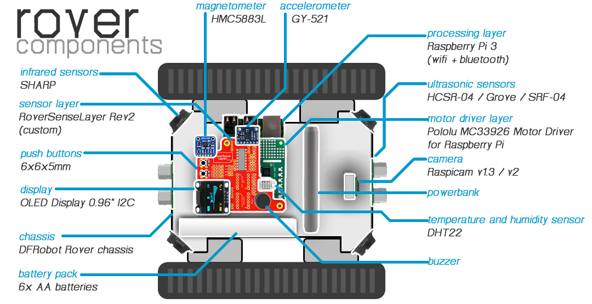
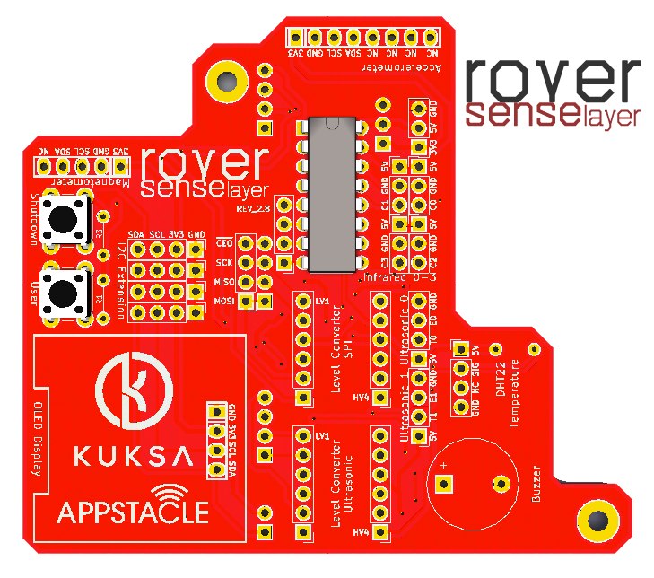

3. Rover Hardware¶
An illustration regarding the different Rover components and where they are located in the Rover is given below:
{kind=link}
Note
The complete list of materials to construct a rover is given in APP4MC Rover Wiki.
3.1. Motor Driver Layer¶
In order to drive the motors of the DFRobot rover chassis, Pololu MC33926 Motor Driver for Raspberry Pi is used as a shield on top of Raspberry Pi 3.
For convenience in applications, following resources might be helpful (taken from Pololu):
Schematic Diagram: Schematics
DXF Drill Drawing: Drill drawing for designing a layer on top
Shield Pin Locations: check image
{kind=link}
3.2. RoverSenseLayer Revision 2¶
{kind=link}
RoverSenseLayer Revision 2 is a custom made circuit board that is designed as a shield on top of Pololu MC33926 Motor Driver. RoverSenseLayer Revision 2 provides interfaces for OLED display, sensors, buttons, analog to digital converter, voltage converters, and more.
Complete list of interfaces are given below:
2x Push button
1x Buzzer
4x Sharp GP2Y0A41SK0F Analog Distance Sensor
1x Pololu Dual MC33926 Motor Driver Connector
1x A/D Converter MCP3208 DIP16
2x I2C-tolerant Logic Level Converters
1x HMC5883L Magnetometer
1x GY-521Y Accelerometer
1x OLED Display 0.96” I2C 4-pin
1x DHT22 Temperature and Humidity Sensor
2x HCSR-04 or Grove Ultrasonic Sensor
4x Extra I2C lines for various sensors
RoverSenseLayer Revision 2 design properties are as follows for production:
Two-sided 82x67mm
Minimum hole size 0.3mm
Minimum track/spacing 6/6mil
Cutouts required
Plating required
Montage drill holes M2.5
(Preferrably) Red solder Mask
(Preferrably) White silkscreen
Note
Schematics can be found in the following git repository: https://github.com/app4mc-rover/rover-sense-layer-rev2
Note
KiCad design files can be found in the following git repository: https://github.com/app4mc-rover/rover-sense-layer-rev2
3.3. Hardware Setup¶
The following image depicts the corresponding software to hardware mapping of proximity sensors and how they should be connected to RoverSenseLayer.

The following shows the pins used by the current roverapp software (the reference image from https://de.pinout.xyz/pinout/):